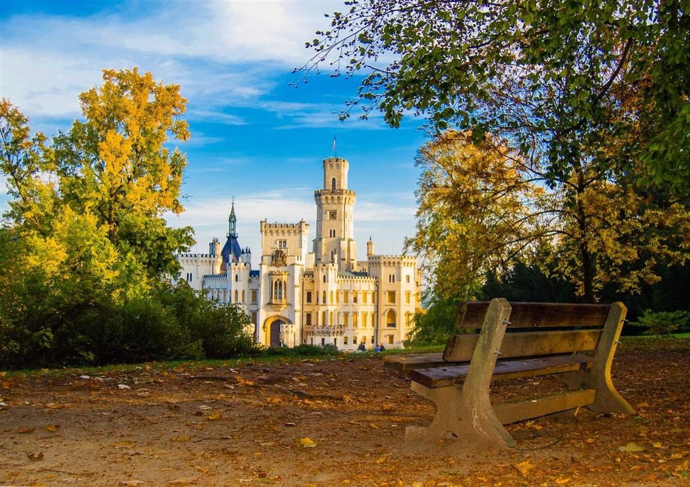
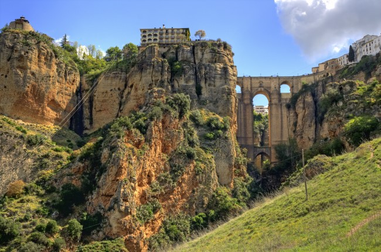

By the Fez
La escapada de la semana: FezLa urbe más antigua de Marruecos despliega un tapiz de zocos y monumentos sellados por murallas que retienen mil y un secretos.
Seguir leyendo...Duvrovnik ¡y mucho más!
Croacia a toda CostaLa curiosa silueta de Croacia divide el país en dos partes muy claras. Una es el interior, rechoncho, agrícola y fértil. Y el otro es el litoral, uno de los lugares con más historia y encanto de la vieja Europa.
Seguir leyendo...14 experiencias únicas para descubrir la República Checa
Volando Voy...Cuando el viajero aterriza en Chequia, cree encontrarse en un paisaje de cuento en el que las ciudades sorprenden por el color de sus fachadas y los pueblos se llenan de castillos y palacios de fábula. Por no hablar de sus sobrecogedores parajes naturales, con desfiladeros de casi 140 metros de profundidad y las reservas naturales por las que hacer senderismo a las puertas de Praga. La República Checa está esperándonos con un sinfín de experiencias inolvidables. En los alrededores de Praga, lo que se conoce como Bohemia Central, se encuentran algunos de los castillos y palacios más impresionantes de la región.
Seguir leyendo...Los 5 pueblos más bonitos de Málaga
Entre pueblosCalles en pendiente cuyas casitas de fachada blanca se acuestan por la ladera de los montes definen la clásica imagen de estos pueblos malagueños. Pero hay mucho más por descubrir tras esta belleza radiante. Frigiliana es una de las aldeas más bonitas de La Axarquía. Cuenta con la iglesia de San Antonio, cuyo campanario es el alminar de una anterior mezquita. El Barribarto, su núcleo antiguo, invita a pasear por calles de paredes encaladas adornadas con tiestos de flores, mientras se descubren escalinatas, pasadizos y patios escondidos.
Seguir leyendo...